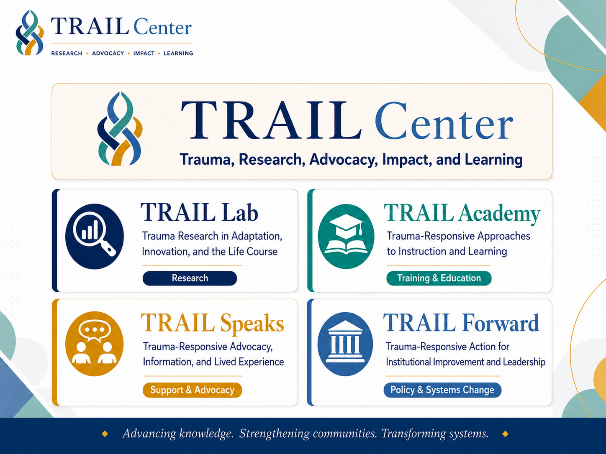
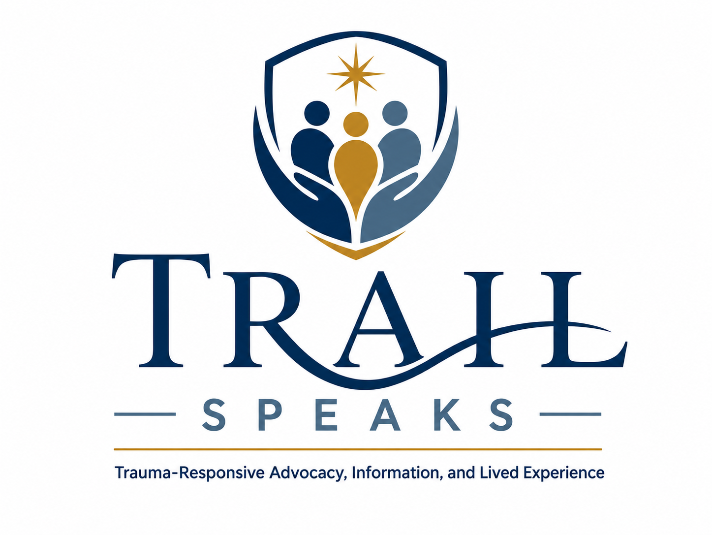
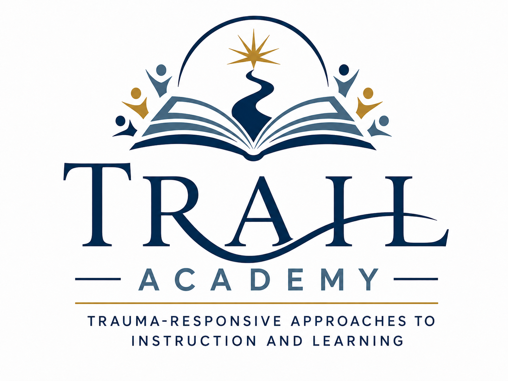

Trauma and Life-Course Pathways
How trauma shapes coping, identity, relationships, victimization, offending, substance use, survival strategies, and long-term outcomes.
The Focus of the Work
The TRAIL Center focuses on the ways trauma shapes people, institutions, systems, and life-course pathways — and on what it takes to create trauma-responsive change.
Core Focus
TRAIL Center work begins with a simple premise: trauma is not only an individual experience. It is also shaped by families, institutions, communities, policies, procedures, programs, and systems.
The Center focuses on understanding how trauma contributes to victimization, offending, coping, disconnection, institutional harm, practitioner stress, and justice-system involvement — and then translating that understanding into research, education, support, and systems-change tools.
What the Center Examines
The Center’s work connects trauma research, lived experience, practice knowledge, and institutional reform.
How trauma shapes coping, identity, relationships, victimization, offending, substance use, survival strategies, and long-term outcomes.
How people experience harm, coercion, abuse, institutional betrayal, help-seeking barriers, and the long-term impact of trauma after victimization.
How trauma, deprivation, instability, and systems contact shape pathways into offending, criminalization, incarceration, and reentry.
How trauma affects practitioners, advocates, law enforcement, corrections, courts, service providers, and the institutions responsible for responding to harm.
How organizational rules, protocols, training requirements, program design, and everyday practices can either reproduce harm or reduce it.
How research, lived experience, education, support, and policy work can be translated into practical systems-change strategies.
How the Work Is Organized
The four branches organize the Center’s work into research, support and advocacy, training and education, and institutional change.

Research
Trauma Research in Adaptation, Innovation, and the Life Course
Develops trauma-focused research, research briefs, evaluation projects, conference work, and applied research products.
Visit TRAIL Lab
Support & Advocacy
Trauma-Responsive Advocacy, Information, and Lived Experience
Develops support resources, advocacy-oriented programming, mentorship pathways, workshops, and lived-experience-centered projects.
Visit TRAIL Speaks
Training & Education
Trauma-Responsive Approaches to Instruction and Learning
Creates trainings, workshops, curriculum, practitioner tools, and educational resources for trauma-responsive practice.
Visit TRAIL AcademyPolicy & Systems Change
Trauma-Responsive Action for Institutional Improvement and Leadership
Focuses on actual institutional change through programs, policies, procedures, protocols, and organizational practices.
Visit TRAIL Forward